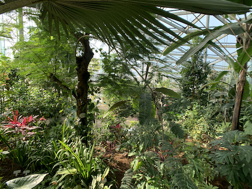
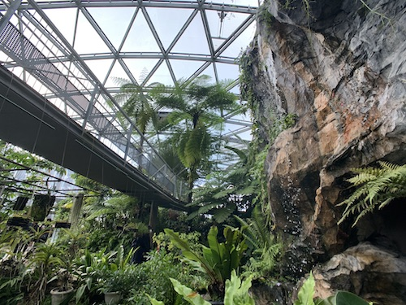

GREENHOUSE
HISTORY
The history of the greenhouse in Shinjuku Gyoen begins with a greenhouse of about 100 square meters, built in 1875(very early period of Meiji Era). It is one of the oldest greenhouse in Japan. At that time, it was research facilities for agricultural technology. After emperor become the owner of this gardem, it become a farm for emperor. But, after the WWII, it become appreciation greenhouse.
HIGHLIGHTS
Plant type (main room)
- Tropical plants (flowers, fruit plants, etc.)
- Plants in tropical ponds and marshes (Rubus terrestris, tropical water lilies, etc.)
- Tropical lowland plants (Tropical rainforest, tropical seasonal forest, Okinawa, Ogasawara plants
- Dryland plants (cycads, cacti, etc.)
- Tropical Mountain Plants (Orchids and Tropical Mountain Plants)
Special room
In the special room, there are many subtropical endangered plants. Shinjyuku Gyoen has the aspect not only an appreciation garden, but also a facility to preserve biodiversity.